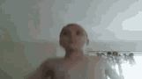

maj 1995
nie wymaga kompilacji
Sun Microsystems
ma ograniczony dostęp do komputera
Podstawowe funkcje z biegiem czasu uzupełniane są
o nowe narzędzia, jak chociażby obiekt Image i tablica document.images
co świadczy o tym, że jest językiem obiektowym
window.open("obraz.html","okienko","toolbar=no,directories=no,menubar=no,height=280,width=160,top=200,left=200");
ta część kodu odpowiada za oddtworzenie strony i zrobienie przycisku
toolbar=no zwraca obiekt toolbar, którego widoczność można ustawić dla danego okna
directories=no, pokazuje lub ukrywa przyciski katalogów
menubar=no, pokazuje lub ukrywa menu przeglądarki
height=280, ustawia wysokość
width=160, ustawia szerokość
top=200, zwraca odwołanie do okna położonego najwyżej w hierarchi
left=200 przsuwa w lewo
